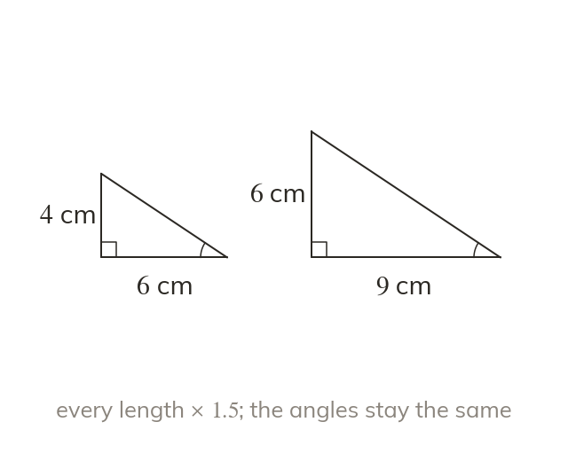
One is an enlargement of the other
Two shapes are similar when one is an enlargement of the other. Their angles are equal, and every length is multiplied by the same scale factor.
A photo printed large, a model car and the real one are the same shape at different sizes. Similarity says exactly what stays the same and what changes.
Work down the page at your own pace. Write every answer in your book first, then click to check it.
Read each card, then follow the worked examples one step at a time.

Two shapes are similar when one is an enlargement of the other. Their angles are equal, and every length is multiplied by the same scale factor.
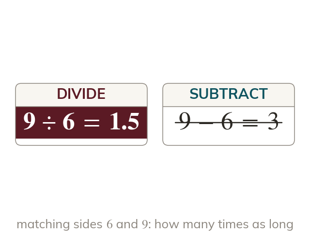
The scale factor = image length ÷ matching object length. A above enlarges. A below reduces.
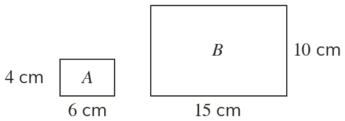
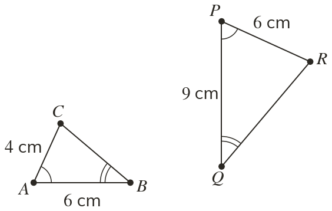
Pick an answer. If it's wrong, the feedback tells you which mistake it was.
Read each card, then follow the worked examples one step at a time.
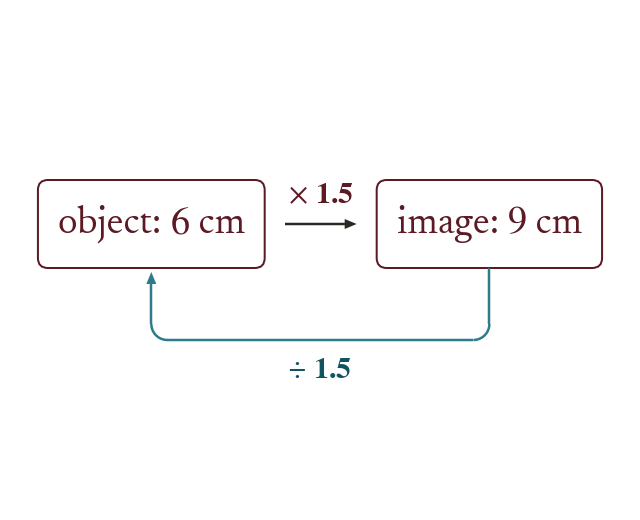
An image length is × the matching object length. To go back, divide by
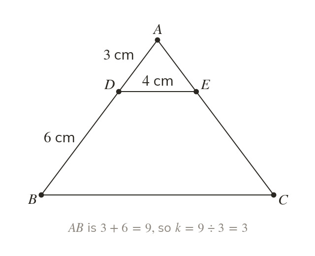
A line parallel to one side cuts off a similar triangle. The two triangles share an angle. Use the whole side of the large triangle, not just the extra piece.
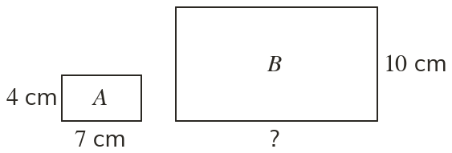
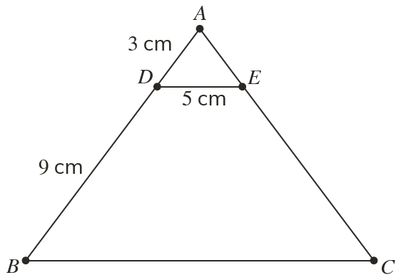
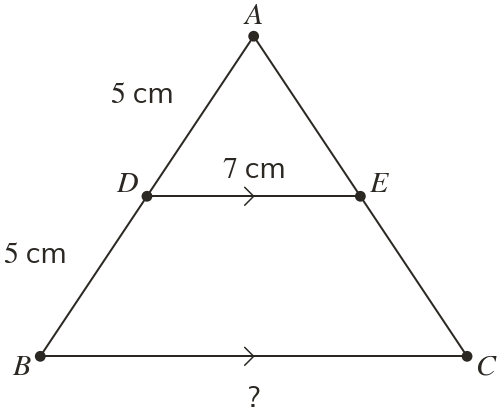
Pick an answer. If it's wrong, the feedback tells you which mistake it was.

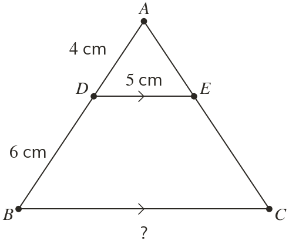
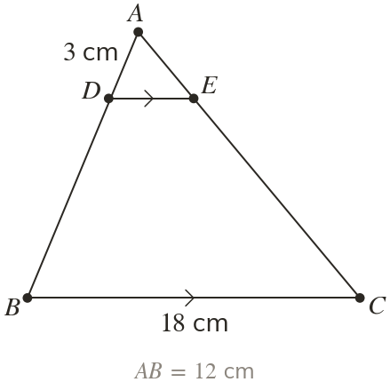
Finished? Next lesson: 10.12.2 Scale Drawings and Maps.
For each skill, tap the one that is true for you today. Your Revise pages start with anything you mark Not yet.
Your ratings are saved on this device only.
Log in, then search for a code to practise that skill.